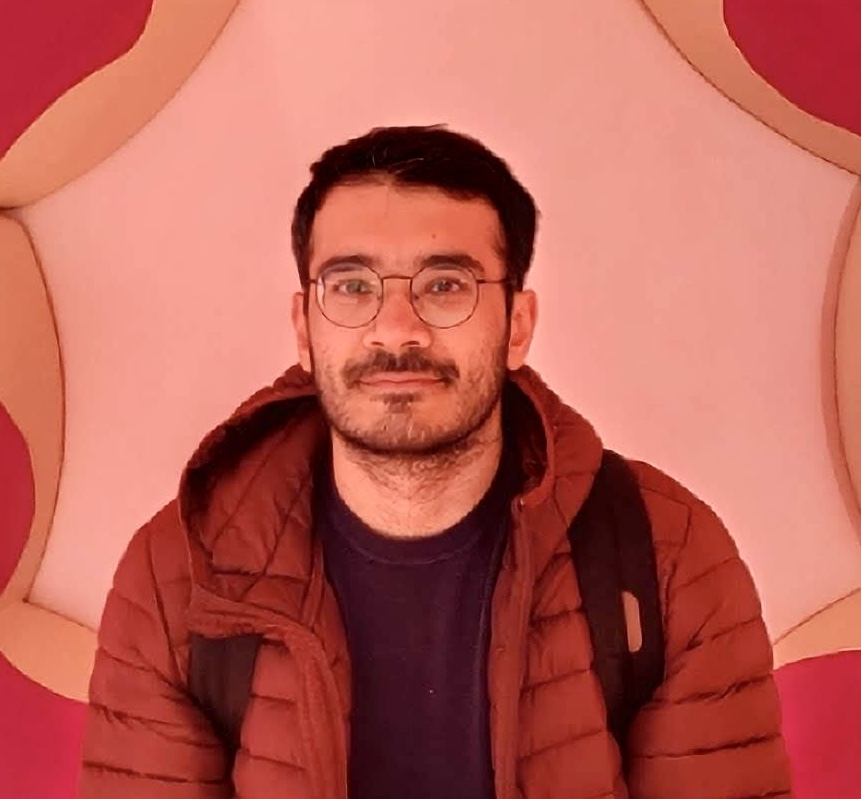

Hi! I research online radicalization and moderation. My work includes measuring social media's influence on user behavior using a combination of social science theories, natural language processing and statistical analysis.
I am a third year PhD. student at The University of Iowa in Computer Science advised by Dr. Rishab
Nithyanand and working in the SPARTA lab.
Jun 2022
Presented @ ICWSM22Apr 2022
Attended CHI22Mar 2022
Paper Accepted "Making a Radical Misogynist" @ CSCW 22Mar 2022
Paper Accepted "Fourth Estate" @ ICWSM 22Jan 2022
Featuered in Dare to Discover @ UIowaNov 2021
Paper Accepted "Act or React" @ ICWSM 22Sep 2021
Presented our work "Act or React" @ LUMSJun 2021
Attended ICWSM 21Aug 2019
Started my PhD @ UIowaMay 2019
Left TPI Lab @ LUMS